Le blog
Des articles courts sur le tempérament, les relations, le travail et vos habitudes. Chacun vous oriente vers le test qui correspond.
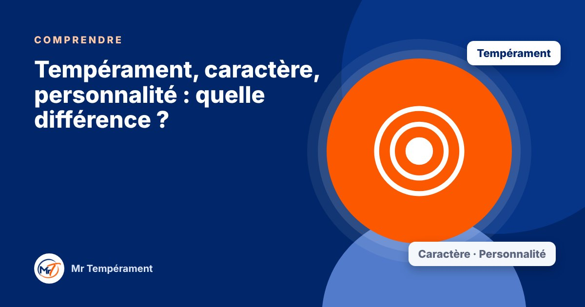
ComprendreTempérament, caractère, personnalité : quelle différence ?
Trois mots que l'on confond souvent, et qui décrivent pourtant trois couches différentes de vous.
Lire →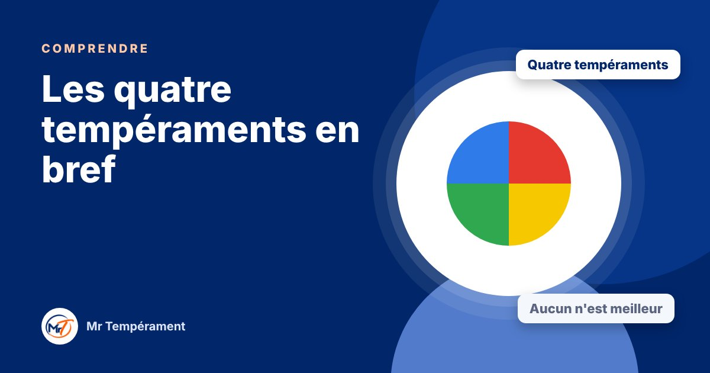
ComprendreLes quatre tempéraments en bref
Dominant, Influent, Stable, Consciencieux : ce que chacun apporte, et ce qu'il doit surveiller.
Lire →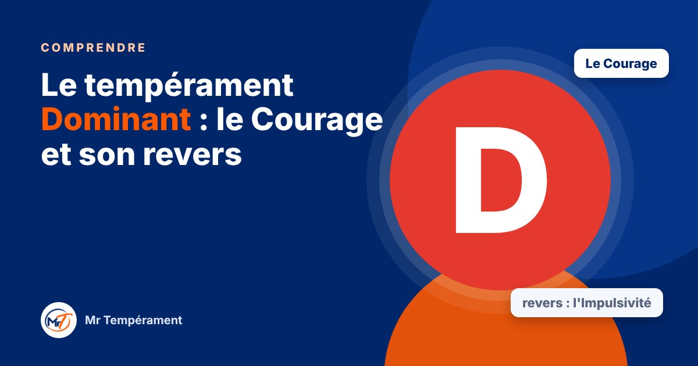
ComprendreLe tempérament Dominant : le Courage et son revers
Il décide vite, il avance, il prend les responsabilités que d'autres évitent. Voici comment il fonctionne, et ce qu'il gagne à surveiller.
Lire →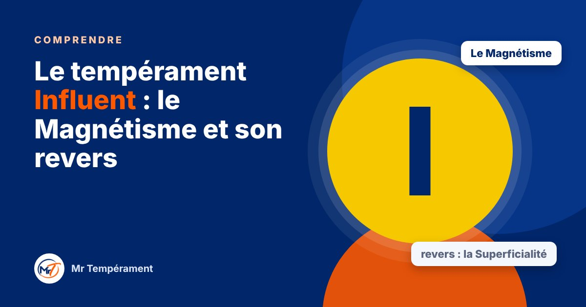
ComprendreLe tempérament Influent : le Magnétisme et son revers
Il rassemble, il enthousiasme, il met de la vie partout où il passe. Voici comment il fonctionne, et ce qu'il gagne à surveiller.
Lire →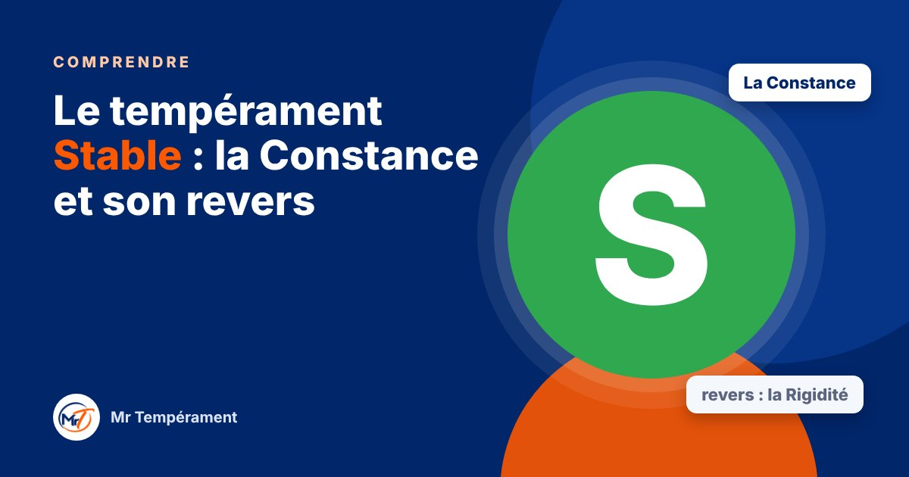
ComprendreLe tempérament Stable : la Constance et son revers
Il est fidèle, patient, présent. Voici comment il fonctionne, et ce qu'il gagne à oser davantage.
Lire →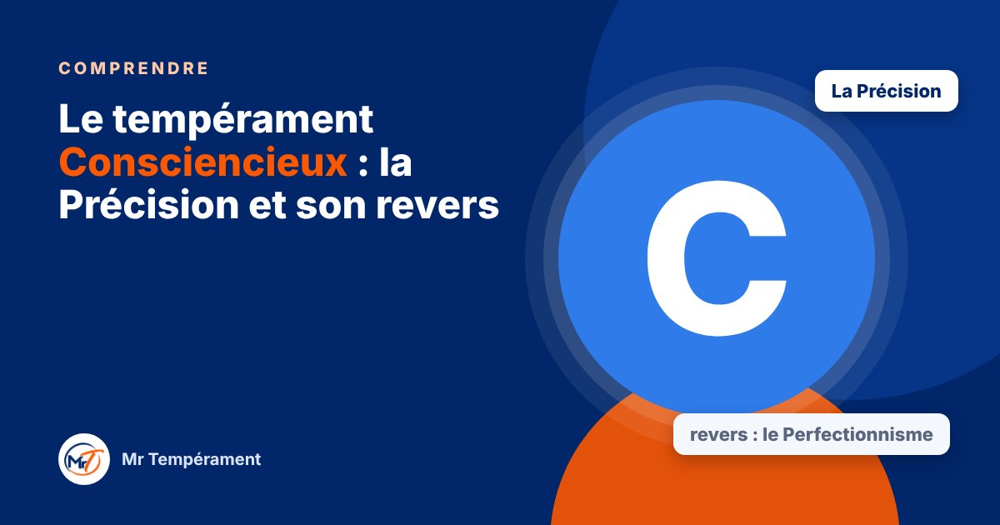
ComprendreLe tempérament Consciencieux : la Précision et son revers
Il réfléchit, il vérifie, il soigne. Voici comment il fonctionne, et ce qu'il gagne à lâcher prise.
Lire →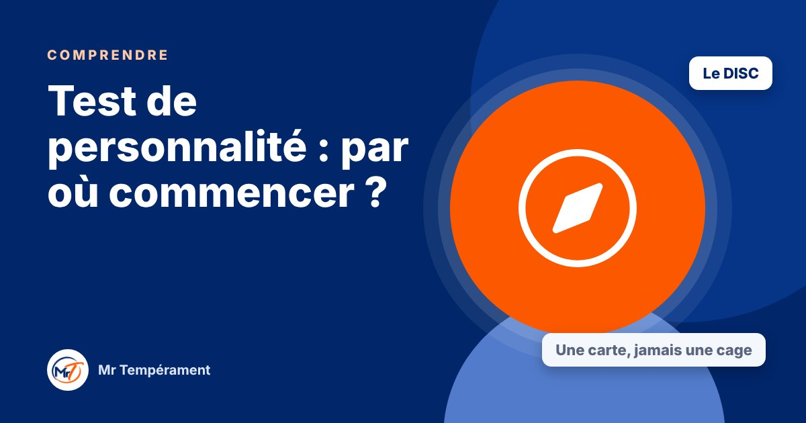
ComprendreTest de personnalité : par où commencer ?
Il existe de nombreux tests. Voici ce que mesure le DISC, ce qu'il ne mesure pas, et pourquoi il convient bien pour débuter.
Lire →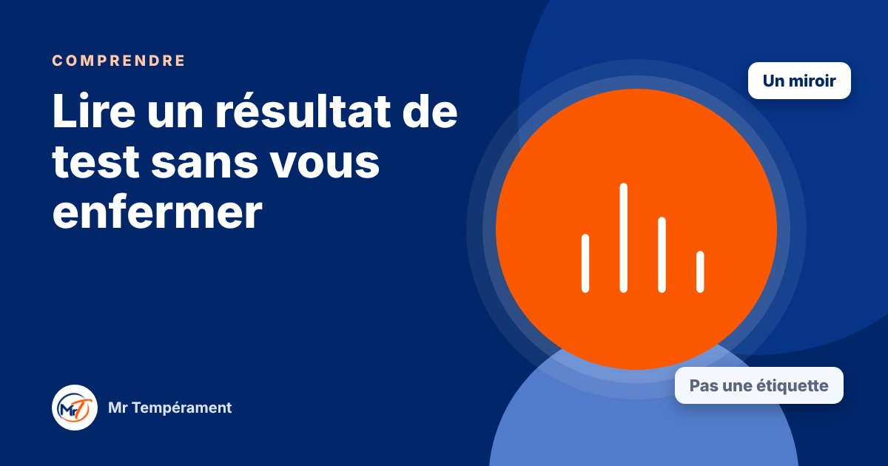
ComprendreLire un résultat de test sans vous enfermer
Un résultat est un miroir, pas une étiquette collée sur vous.
Lire →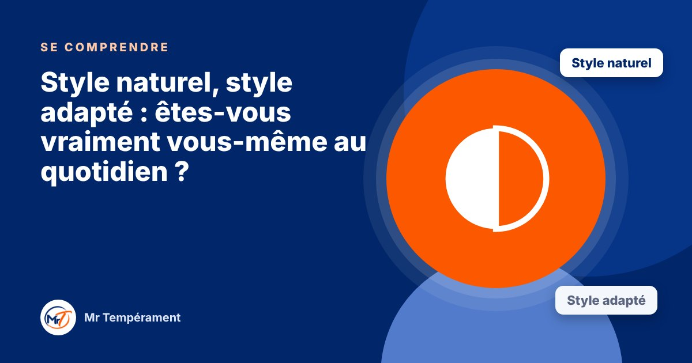
Se comprendreStyle naturel, style adapté : êtes-vous vraiment vous-même au quotidien ?
Ce que vous êtes au naturel et ce que vous montrez aux autres ne sont pas toujours identiques.
Lire →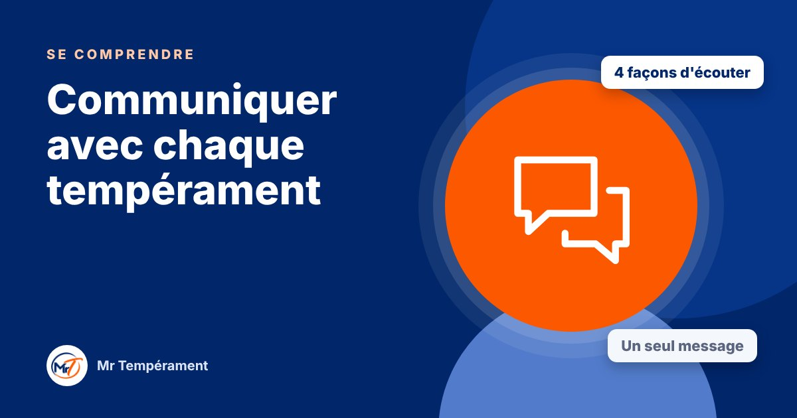
Se comprendreCommuniquer avec chaque tempérament
Le même message peut être reçu de quatre façons différentes. Voici comment parler à chacun pour être vraiment entendu.
Lire →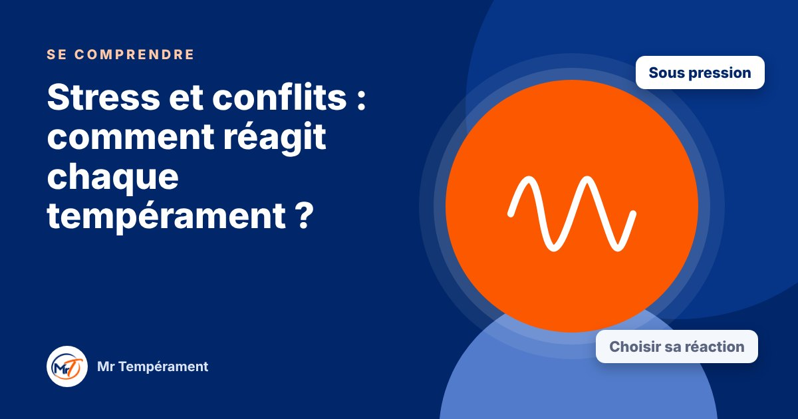
Se comprendreStress et conflits : comment réagit chaque tempérament ?
Sous pression, on ne se comporte pas comme d'habitude. Reconnaître sa réaction aide à la choisir plutôt qu'à la subir.
Lire →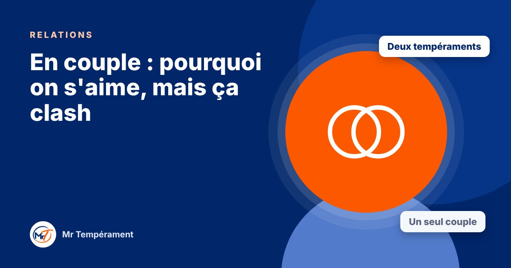
RelationsEn couple : pourquoi on s'aime, mais ça clash
Deux personnes qui s'aiment peuvent se heurter sans cesse. Souvent, ce n'est pas un manque d'amour, mais deux tempéraments qui ne parlent pas la même langue.
Lire →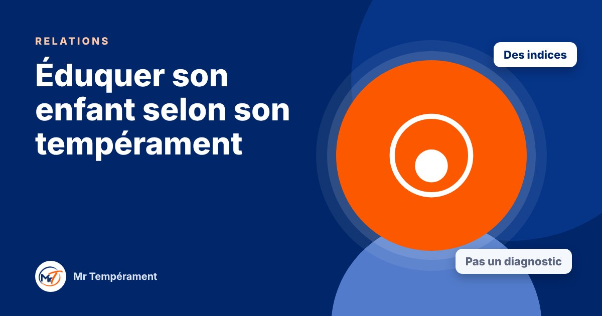
RelationsÉduquer son enfant selon son tempérament
Chaque enfant réagit à sa manière. Comprendre ses tendances aide à l'encourager, à le cadrer, et à éviter bien des bras de fer.
Lire →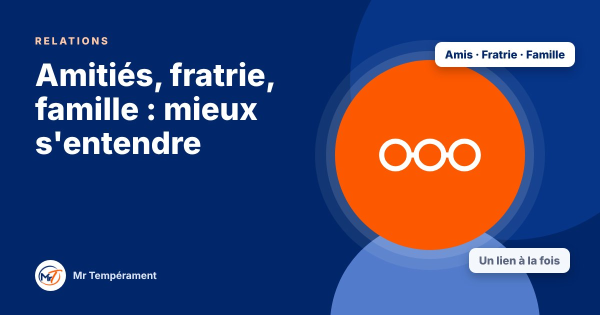
RelationsAmitiés, fratrie, famille : mieux s'entendre
On choisit ses amis, pas sa famille. Dans les deux cas, comprendre les tempéraments rend les relations plus simples.
Lire →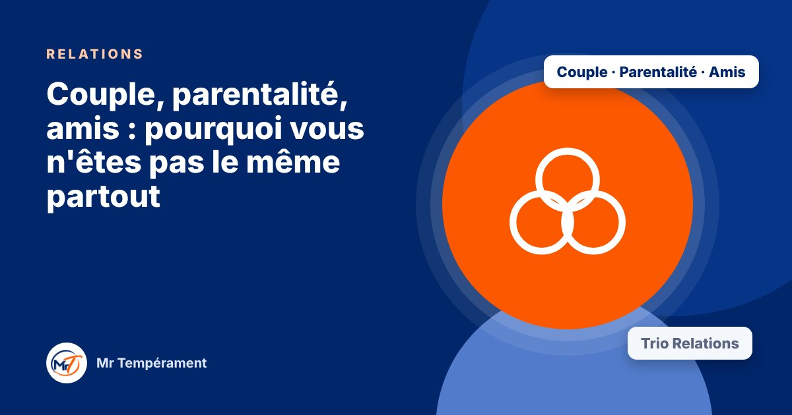
RelationsCouple, parentalité, amis : pourquoi vous n'êtes pas le même partout
Avec votre conjoint(e), vos enfants et vos amis, votre tempérament ne s'exprime pas de la même façon.
Lire →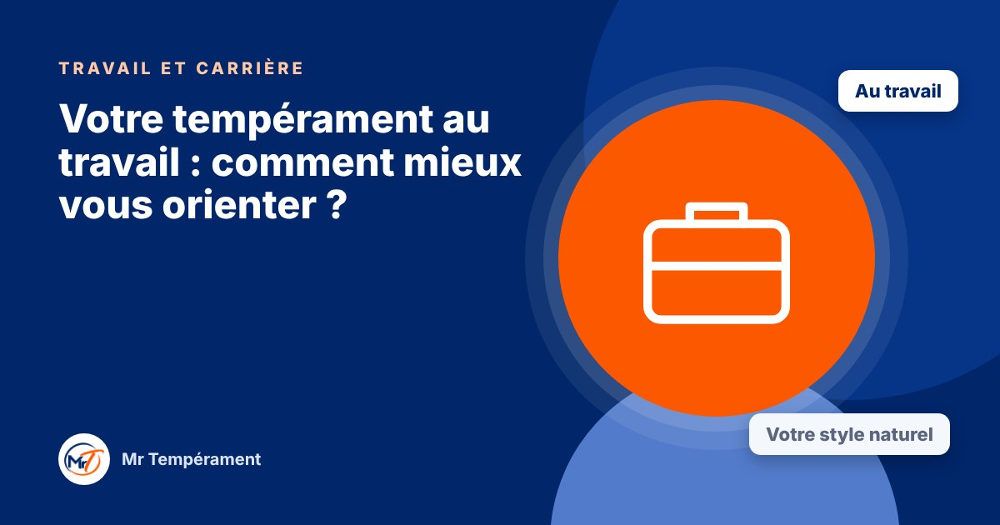
Travail et carrièreVotre tempérament au travail : comment mieux vous orienter ?
Votre manière de travailler, de communiquer et de décider dit beaucoup de l'environnement où vous vous épanouirez.
Lire →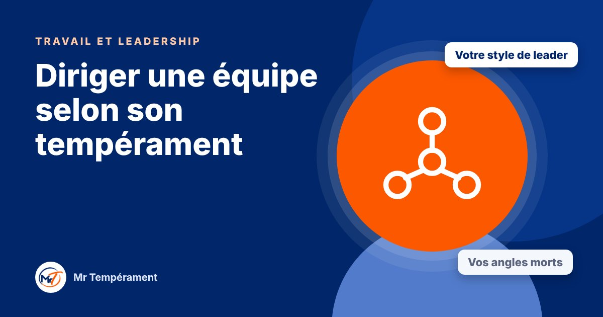
Travail et leadershipDiriger une équipe selon son tempérament
Chaque leader a un style naturel, avec ses atouts et ses angles morts. Voici comment le reconnaître et l'ajuster.
Lire →Travail et leadershipEntreprendre selon son tempérament
Lancer, vendre, décider, tenir : chaque tempérament a ses atouts d'entrepreneur et ses pièges.
Lire →Travail et leadershipEmployé, leader, entrepreneur : un même tempérament, trois rôles
Votre manière de travailler, de diriger et de créer ne se ressemble pas toujours, et c'est utile à savoir.
Lire →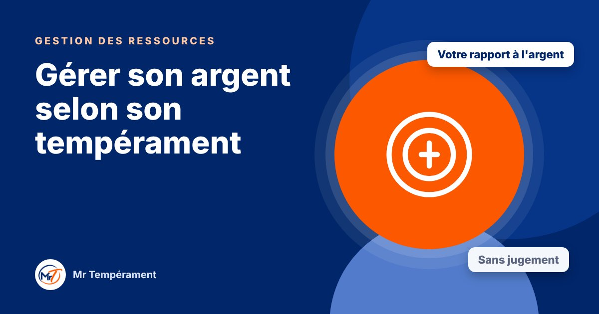
Gestion des ressourcesGérer son argent selon son tempérament
On n'a pas tous le même rapport à l'argent. Le comprendre aide à épargner, à dépenser et à décider avec plus de sérénité.
Lire →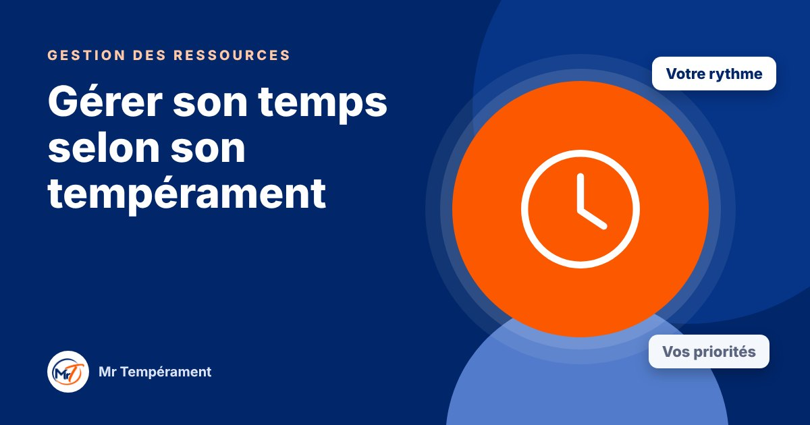
Gestion des ressourcesGérer son temps selon son tempérament
Retards, agenda surchargé, procrastination ou rigidité : chaque tempérament a sa manière de vivre le temps.
Lire →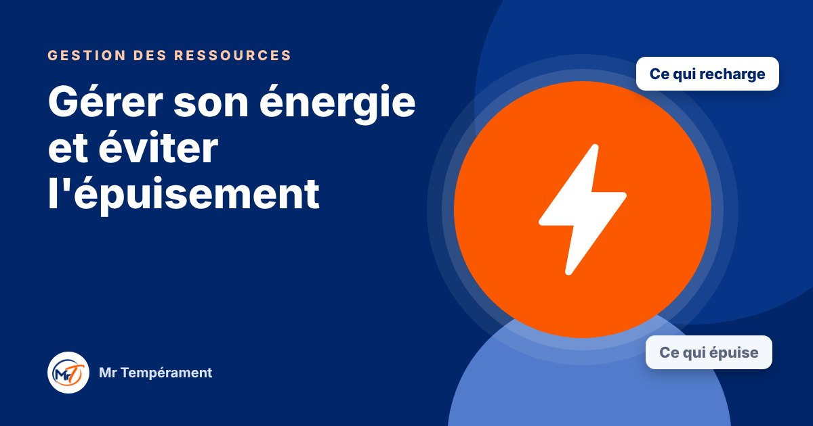
Gestion des ressourcesGérer son énergie et éviter l'épuisement
Ce qui vous recharge, ce qui vous vide : votre tempérament donne des pistes pour mieux protéger votre énergie.
Lire →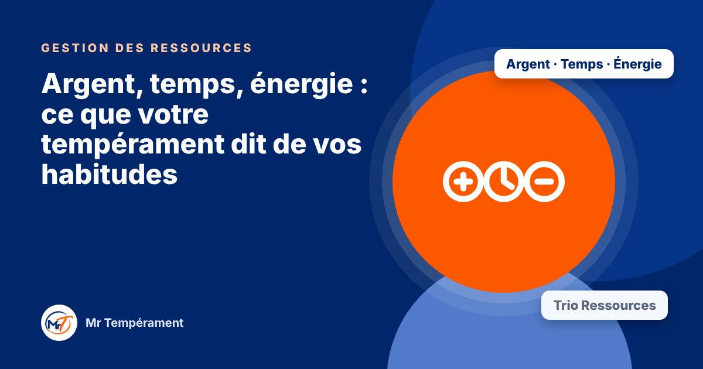
Gestion des ressourcesArgent, temps, énergie : ce que votre tempérament dit de vos habitudes
La manière dont vous gérez ce qui vous est confié révèle beaucoup de votre fonctionnement naturel.
Lire →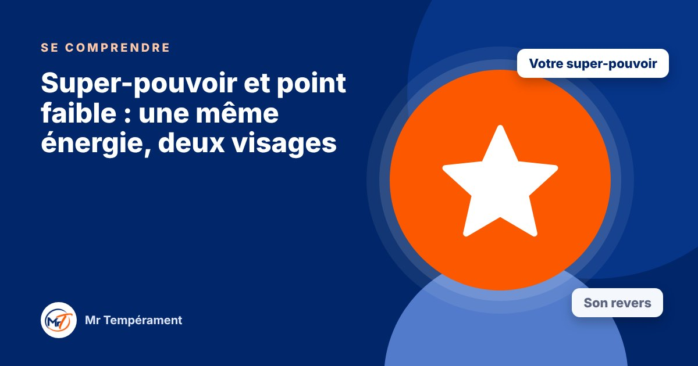
Se comprendreSuper-pouvoir et point faible : une même énergie, deux visages
Votre plus grande force et votre plus grande faiblesse viennent souvent de la même source.
Lire →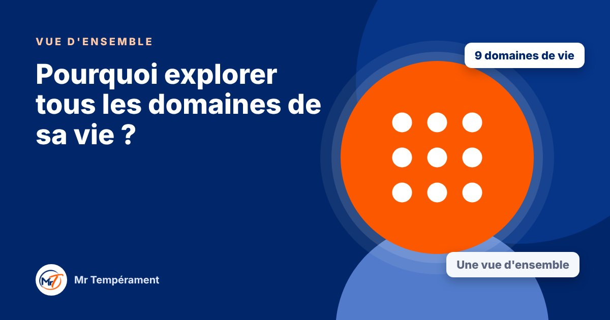
Vue d'ensemblePourquoi explorer tous les domaines de sa vie ?
Votre tempérament vous suit partout, mais il ne s'exprime pas de la même façon à chaque endroit.
Lire →La boutique
Mes livres, pour aller plus loin à votre rythme
Des ebooks à télécharger, avec un achat sécurisé et une livraison immédiate. Le paiement se fait sur ma boutique Chariow.

Ebook
Pourquoi suis-je comme ça ?
La vérité derrière votre tempérament
Découvrez les quatre tempéraments, ce qui vous motive, ce qui vous freine, et comment faire de votre tempérament un super-pouvoir.
3 500 FCFA
Obtenir l'ebookVoir toute la boutique sur Chariow →